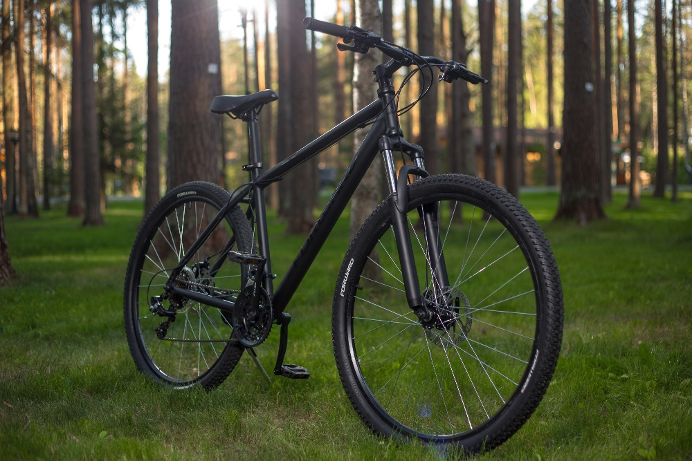
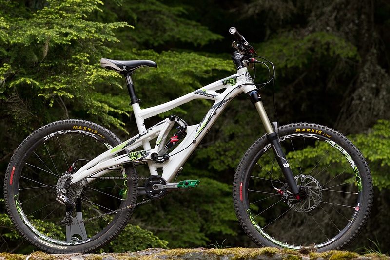
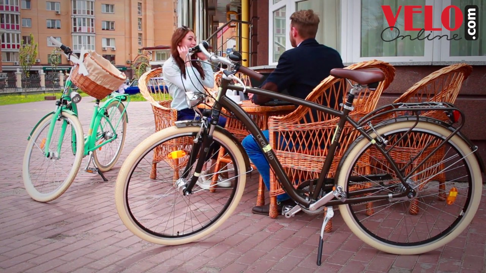

ЧТО ТАКОЕ ГОРНЫЙ ВЕЛОСИПЕД
- Горный велосипед - Хардтейл
- Горный велосипед - Двухподвес
- Комфортные велосипеды
- Велосипеды стоимостью от 250 у.е.
- Велосипеды стоимостью от 400 у.е. д.о 700 у.е.
Горный велосипед, MTB - является одним из самых быстро развивающимся видов активного отдыха и одним из самых молодых олимпийских видов спорта.
В отличие от шоссейного велосипеда и обыкновенного дорожника, которые за последние 50 лет не претерпели значительных изменений, горный велосипед совершенствовался и развивался год за годом.
Основными особенностями горного велосипеда являются широкие (1.5 - 2.5 дюймов, вместо обычных 20-40 мм) велосипедные покрышки, чуть меньшего, чем у дорожных велосипедов, диаметра (26 дюймов вместо 700 мм). Рама специальной геометрии с кареткой, приподнятой для езды по пересеченной местности до 29-33 см и большое (21-27) количество передач с широким диапазоном передаточного соотношения, пригодным для любого перепада высот, при котором еще можно ехать. Горные велосипеды могут эксплуатироваться в экстремальных условиях, при этом требования удобства и эффективности управления играют не меньшую роль, чем снижение веса. Отчасти именно поэтому гидравлические тормоза, амортизационные вилки и прочие новые разработки появились именно в классе MTB. Горные велосипеды бывают двух основных видов: - хардтейлы и двухподвесы.
Горный велосипед - Хардтейл
Хардтейлы - горные велосипеды, не имеющие заднего амортизатора. Прямой перевод – «жесткий хвост». Хардтейлы имеют самое широкое применение: от прогулок по пересеченной местности до соревнований по дисциплинам кантри-кросс, байк-кросс, слалом, триал, стрит. Могут быть жесткие (rigid) - это велосипеды, не имеющие переднего амортизатора или с амортизационной вилкой (front suspension). Для минимизации веса и улучшения ходовых характеристик в основном изготавливаются из алюминиевых сплавов.

Горный велосипед - Двухподвес
Велосипеды, имеющие амортизацию, как переднего, так и заднего колеса. Идеально подходят для катания по пересеченной местности, так как амортизаторы сглаживают толчки, в результате чего улучшается управляемость велосипедом и повышается комфорт движения.

Комфортные велосипеды
К этой группе относятся велосипеды с колесами 26-28 дюймов, тормозами с антиблокировкой, амортизированным подседельным штырем, имеющих, в общем, полный набор для комфортной и безопасной езды. Они не предназначены для езды с интенсивной нагрузкой и в сложных условиях. С группой "горные велосипеды" их объединяет геометрия рамы.

А теперь поговорим, о том как правильно выбрать горный велосипед. Для начала определи, сколько готов потратить на велосипед.
Велосипеды стоимостью от 250 у.е.
На велосипедах такого уровня используется: стальная рама, реже - аллюминиевая, жесткая вилка или недорогая аммортизационная вилка, одинарный обод, навесное оборудование типа Shimano C-101, Shimano Sis и т.д. Срок активной эксплуатации примерно 1,5-2 года.
Эти велосипеды предназначены, в основном, для катания по асфальту с редкими выездами на грунтовую местность. С другой стороны, при бережном отношении к технике, как то: вовремя поднимать руль велосипеда при переезде через высокий бордюр, технично переключать скорости без напряжения цепи и т.д. – позволит использовать этот велосипед не совсем так как написано в инструкции, т.е. с большим КПД и долгое время.
Велосипеды стоимостью от 400 у.е. д.о 700 у.е.
На байках такого класса обычно присутствуют: алюминиевая рама, мягкая (передний амортизатор) амортизационная вилка с ходом более 60 мм, навесное оборудование класса Shimano Alivio и выше до Deore LX, двойные обода (на моделях ближе к $700).
Это байки для людей, которые, приобретая велосипед в первый раз, хотят обзавестись хорошей техникой с долгим сроком службы.
На таком велосипеде при достаточной физической подготовке можно долго путешествовать (без остановок на починку ходовых частей), проезжая до 80 км в день. Длительность поездки может быть значительной и оборудование на велосипеде такого уровня выдержит любые погодные условия и грязь.
Далее нужно определиться со стилем катания.
Если ты собираешься купить свой первый велосипед, то не стоит покупать дорогую узко специализированную модель. Ты еще не знаешь, каким стилем увлечешься. И главное, не то что без опыта ты не раскроешь весь потенциал машины, а то, что он принесет тебе массу дискомфорта.
Если ты фрирайдер: твоя стихия - скорость, прыжки, дроп-оффы, ты не любишь ограничений - едешь туда, куда хочешь. Байки для фрирайда - это наиболее универсальные велосипеды. Фактически они готовы для использования в любой дисциплине. Само понятие фрирайд - очень широкое. Поэтому и велосипеды, которые производители позиционируют как фрирайдные, могут очень сильно отличаться. Бывает и такой фрирайд, что даунхил по сравнению с ним - это прогулочная езда! Как правило лучше покупать двухподвесочный велосипед, но если ты тяготеешь к дерт-джампингу и городскому катанию, то лучше купить хардтейл. Ход подвески таких велосипедов начинается от 100мм и даже может превышать 200мм. При выборе ростовки ты можешь пустить в ход свою фантазию, но придерживаться следует одного правила: рама должна быть не очень большой, т.е. до 19 дюймов даже при росте в 190см. Вычти 1-2 дюйма из показателей для велосипедов кросс-кантри и ты получишь оптимальный для тебя размер.
Если ты предпочитаешь кросс-кантри: ты не ищешь легких путей, ты любитель пересеченной местности и больших нагрузок. Это самая распространенная дисциплина - гонки по пересеченной местности. Кросс-кантри на сегодняшний день обладает статусом олимпийского вида спорта, пока что ни одна другая дисциплина не получила такого признания. В кросс-кантри есть как тяжелые подъемы, так и техничные, быстрые спуски. Основные требования к гонщикам - это сила и выносливость, но и про технику езды не стоит забывать. Если ты делаешь первые шаги в мире горного велосипеда, это хорошая отправная точка. Ты получишь необходимые базовые навыки управления велосипедом и приобретешь хорошую физическую форму. Абсолютно все профессионалы вело-спорта начинали с кросс-кантри, даже самые безбашенные даунхилеры и фрирайдеры.
Велосипеды для кросс-кантри рассчитаны на наиболее эффективное использование твоих усилий это - самые быстрые велосипеды на бездорожье! Велосипед должен быть максимально легким и жестким. Поэтому лучше всего подходят алюминиевые рамы, без задней подвески.
Если ты даунхиллер: ты любишь головокружительные спуски. Самое главное для тебя - это скорость и чем сильнее бездорожье, тем лучше для тебя. Человек не всегда пройдет там, где ты проедешь на велосипеде. Постоянно вниз - вот твой девиз! Сам байк требует достаточно внушительных капиталовложений и рама соответственно тоже. Обычно для даунхилла делают рамы двух-трех размеров всегда с амортизатором как сзади, так и спереди. Вес не имеет значения. Здесь главное прочность, нагрузки на велосипед будут невероятные. Очень важна качественная амортизация, поэтому на таких байках ход подвески начинается со 150мм.
Если ты триалист: для тебя нет преград! Парапеты, скамейки, бордюры - все это является неотъемлемой частью твоей жизни. Прыгать то на заднем то на переднем колесе - для тебя привычное дело, удивлять публику ты умеешь! Триальный байк, должен быть прочным, но при этом максимально легким. Обычно - это очень маленькая рама, длинный вынос, хорошие тормоза и, это важно, жесткая вилка!
Если ты дертджампер, или же предпочитаешь соревноваться в параллельном слаломе, байкер-кроссе, то тебе придется много "летать": трамплины, трамплины и еще раз трамплины и не важно какой они высоты - 2 метра или 20 сантиметров. Высота и трудности тебя не пугают! Именно в дертовом велосипеде главное - рама! Советуем хардтейл, достаточно жесткий, прочный и тяжелый для устойчивости в воздухе. Но подойдет и легкий фрирайдный байк с задней подвеской. Рама должна быть маленькой ростовки, чтобы лучше контролировать велосипед как на земле так и в воздухе. Но при этом иметь достаточно длинную верхнюю трубу, иначе она просто будет неудобной, особенно с коротким выносом..
Ещё одно из главных правил выбора горного велосипеда, это правильное определение ростовки.
Размером рамы велосипеда считается расстояние от оси каретки/оси системы до пересечения конца подседельной трубы с подседельным штырем и измеряется в дюймах.
Можно дать следующие рекомендации по выбору размера велосипедной рамы в зависимости от роста: